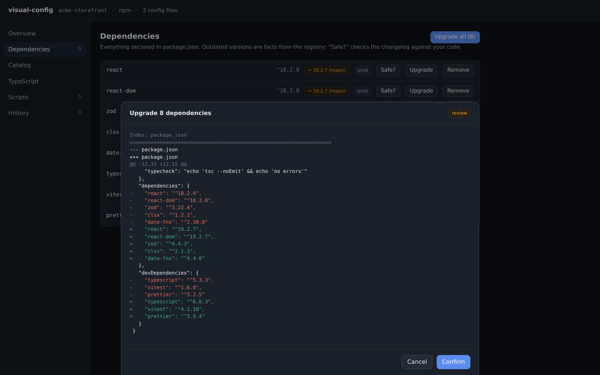
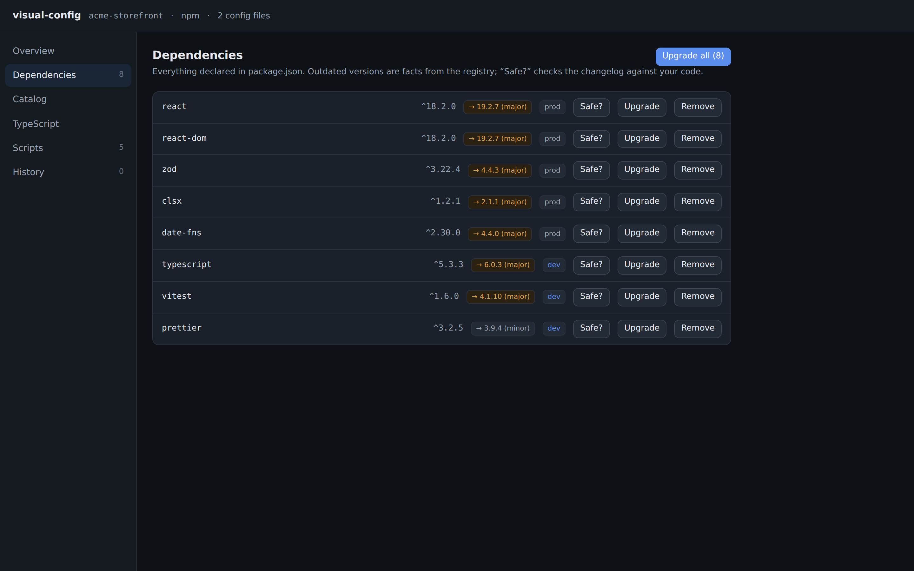

zod to ^4.4.3
you
applied
visual-config is a visual control surface for JavaScript/TypeScript project configuration (dependencies, scripts, TypeScript, publishing) that lives on top of the files you already have. Every change is a reviewed diff. Everything is reversible. Your files stay the source of truth.

Config is the operating system of a project, and everyone touches it differently. Pick your seat.
One command opens your whole project's config as a UI. Any repo, no dev server, no setup.
npx typo can't
execute a random package
visual-config mcp hands your agent the same operations you get as
buttons: validated, previewable, reversible.
The built-ins are plugins with zero special privileges. Your framework or linter can have a first-class panel.
definePlugin from @apostel/visual-config-kitThe base states only verifiable facts. Recommendations come from opinion packs users install, always labeled with your name.
strict” shows as your advice, attributedThis is a simulation of the real flow, in the real design system. Nothing here writes without the Diff Sheet, and nothing applied is ever more than one click from undone.
zod to ^4.4.3
you
applied
Press Upgrade. The change is planned, not written.
The real thing does this for installs, removals, script edits, tsconfig options, and package fields. Agent-initiated changes render in the same sheet.
Alpha, published to npm and green in CI. Dependency health, a config editor, tool scaffolding, a one-click Biome swap, changelog reading, and an MCP server all ship today — the vision docs describe what's still ahead (monorepos, IDE panels).
Captured from the current build running against a demo project, not mockups.

rm-adjacent shell into your config.
Every button in the UI is also an MCP tool. Agents plan the same Operations, get back the same structured diff, and write through the same validated, reversible engine. As agents write more of your code, the config layer is exactly where you want them constrained and observable.
Read the MCP spec →# run the tools as an MCP server (stdio) npx @apostel/visual-config mcp # or register it for Claude / Cursor / VS Code in one step npx @apostel/visual-config init-mcp # every operation becomes a plan_* tool returning a diff: plan_install_package plan_upgrade_dependencies plan_remove_dependency plan_add_script plan_remove_script plan_set_tsconfig_option plan_set_package_field plan_add_mcp_config # plus the engine itself: get_project get_diagnostics analyze_bump apply_change undo list_journal # read-only resources: project://model diagnostics://outdated tsconfig://options
Eight packages in one pnpm workspace. The core knows nothing about HTTP, the DOM, or MCP; the browser UI, the daemon, and the agent server are thin transports over the same engine. Click a package to see its role and wiring.
Each phase is independently useful and builds on the same core. Full detail with exit criteria in docs/ROADMAP.md.
Core → daemon → birpc → React UI → Change → journal, proven on the smallest feature. Runs on any repo.
The format- and comment-preserving write layer (golden-tested), the Operation→Change→undo engine with enforced scope, and the plugin host the built-ins themselves run on.
package.json viewer, scripts as buttons, the catalog, the Diff Sheet, outdated-dependency facts with safe upgrades. Vulnerability data (npm audit / OSV) is the open item.
TypeScript panel and the attributed opinions system are in. Next: changelog-driven, code-aware bump safety; migrations backed by codemods or maintainer-authored agent skills; guided framework config; publish-readiness checks.
Landed ahead of sequence because the Operation abstraction made it nearly free. The clearest moat: nobody else exposes reversible config mutations to agents.
definePlugin, npm auto-discovery, and a worked opinion pack exist. To
come: stabilized contribution surface, declarative config editors, the
marketplace.
Biome ⇄ ESLint+Prettier as one previewed, reversible transaction, honest about lossy rule translation. Only after the diff/undo machinery has earned trust.
VS Code webview panel first, JetBrains via JCEF, Zed through MCP. Plus the honest, IDE-native “cleaner workspace” toggle: decluttering, never hiding state.
Six rules the codebase enforces, not aspirations.
No shadow store, no lock-in layer. We read and write the exact files git already tracks. Uninstalling leaves your project byte-for-byte as it was.
plan() never writes. One engine method applies changes, and every
operation declares the files it may touch; the engine rejects the rest.
Minimal diffs a careful human would produce. The moment a tool clobbers your comments or reorders your keys, trust is gone, so that layer is golden-tested.
Every applied change lands in a journal with its inverse. Undo is a first-class citizen for human and agent actions alike.
The base states only what's verifiable: outdated, vulnerable, non-default. Taste arrives via opinion packs you install, always attributed to their author.
It runs on your machine against your files. That's the whole data flow.
Vision, feasibility scores, prior art, and the concrete specs the code follows.
tsconfig.json by hand